> HELP "6502BENCH"
6502 Bench documentation
How to use the bench, panel by panel, and what the emulated 6502 does at its pins. The numbers in each list match the numbered markers on the screenshot above it.
User guide
6502 Bench is the sister of Z80 Bench and is laid out the same way, so if you know one you know the other.
Quick start
The bench opens with a short sample program assembled into ROM at 8000h, with the reset vector pointing at it. To see it work:
- Press Step instruction (or the S key) a few times. The highlighted line in the disassembly moves, the registers that changed turn orange, and the bus timing panel draws the instruction that just ran.
- Press Clock 1 cycle (C) to go one clock at a time. Every 6502 clock is a bus cycle, so the address bus, data bus and R/W pin change on each one.
- Press Run (R) to let it go, and again to stop. The sample counts on the first I/O register at
6000h, so the LEDs in the I/O registers panel count up. - Edit the source in the Program panel and press Assemble and load to run your own code.
The keyboard shortcuts work whenever you are not typing in a field.
The screen
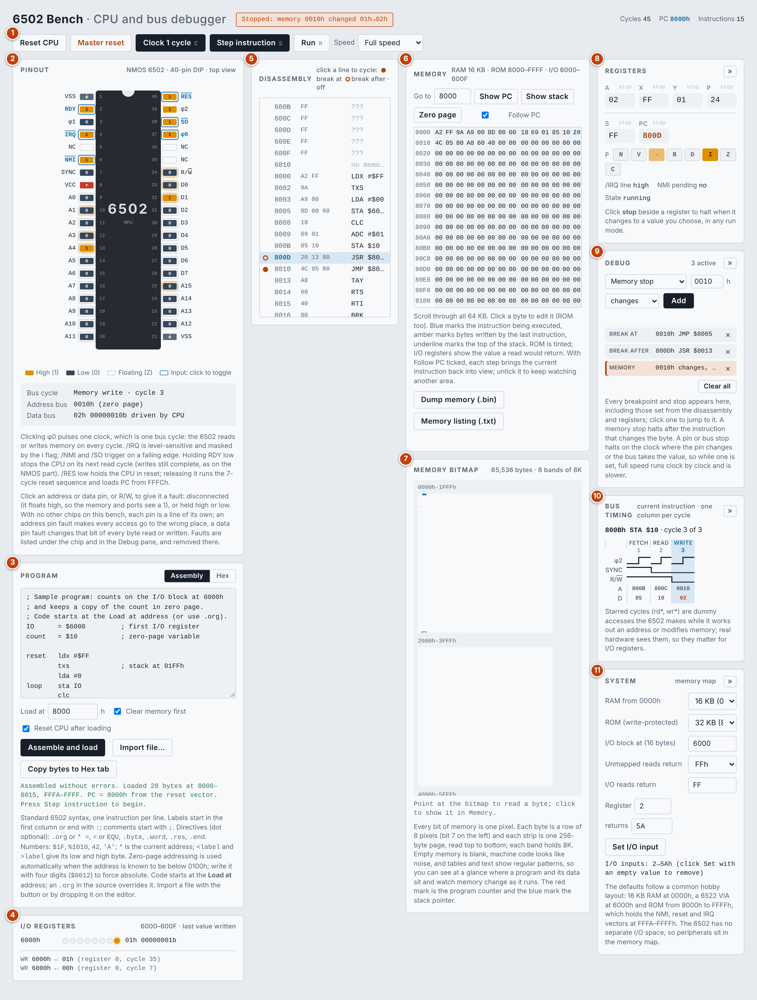
- Toolbar: reset, clock, step and run controls, with the status message beside the title and the cycle, PC and instruction counters at the top right.
- Pinout: the 40 pins of the 6502, live.
- Program: the assembler and hex editor, and the loader.
- I/O registers: what the program has written to the I/O block.
- Disassembly: memory shown as instructions; breakpoints are set here.
- Memory: the hex view of all 64 KB.
- Memory bitmap: all of memory as a picture, one pixel per bit.
- Registers: every register and flag, editable.
- Debug: the list of every breakpoint and stop.
- Bus timing: every bus cycle of the current instruction.
- System: the memory map and the I/O input settings.
On a narrow screen the columns stack one under another. The Registers, Debug, Bus timing and System panels each have a » button that folds the panel away to give Memory and Disassembly more room.
Running and stepping
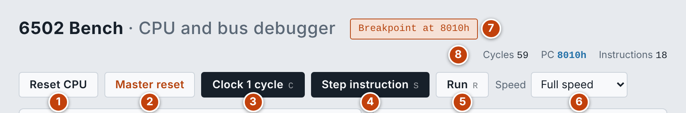
- Reset CPU: runs the reset sequence, which loads the program counter from the reset vector at
FFFCh. Memory, breakpoints and stops are kept. - Master reset: clears ROM and RAM, removes every breakpoint and stop, returns the input pins to their normal level and resets the CPU. Your source in the editor is kept. It asks for a second click to confirm.
- Clock 1 cycle (C): advances one clock, which is one bus cycle. This is the finest step.
- Step instruction (S): runs to the end of the current instruction.
- Run (R): runs until you press it again or a breakpoint or stop halts it.
- Speed: the clock rate used by Run: 5 Hz, 50 Hz, 1 kHz, 5 kHz, 10 kHz or full speed. The slow rates let you watch the pins and LEDs change.
- Status: what just happened: a load, a reset, or the breakpoint or stop that halted the run.
- Counters: cycles and instructions executed since the last reset, and the program counter.
Loading a program
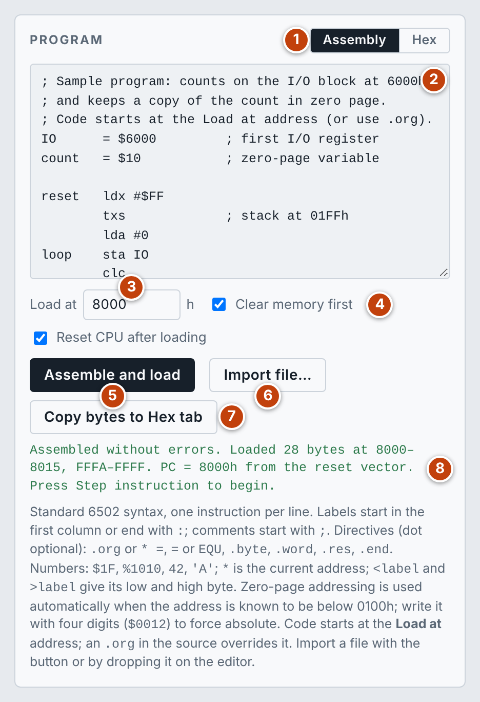
- Assembly or Hex: choose how you enter the program.
- Editor: type or paste here, or drop a file on it.
- Load at: the address where the code goes, for example the start of ROM. In Assembly it applies until the first
.org; Intel HEX keeps its own addresses. - Clear memory first and Reset CPU after loading: untick the first to load several pieces into memory one after another; untick the second to patch memory without restarting the program.
- Assemble and load: assembles (or reads the hex) and writes the bytes into memory, ROM included.
- Import file…:
.asm,.sand.a65files open in Assembly;.hex,.ihxand plain hex text open in Hex; raw.binand.romimages are converted to hex. - Copy bytes to Hex tab: turns the assembled code into an annotated hex listing.
- Result: how many bytes were loaded and where, or what went wrong.
After loading, the CPU is reset through the reset vector at FFFCh if the program sets one; otherwise the program counter is set to the load address.
Assembly uses standard 6502 syntax, one instruction per line. Labels start in the first column or end with :, and comments start with ;.
| Item | Accepted |
|---|---|
| Directives (the dot is optional) | .org or * =, = or EQU, .byte, .word, .res, .end |
| Numbers | $1F, %1010, 42, 'A', and * for the current address; expressions are allowed |
| Low and high byte | <label and >label |
| Zero page | Used automatically when the address is known to be below 0100h. Write the address with four digits ($0012) to force absolute addressing |
Hex takes bytes separated by spaces or new lines. Text after ; is ignored, and a line such as FFFA: continues loading at that address. Intel HEX (lines starting with :) is also accepted.
When you load hex or a ROM image, the disassembly turns it into labelled source that you can edit and assemble again.
Pinout
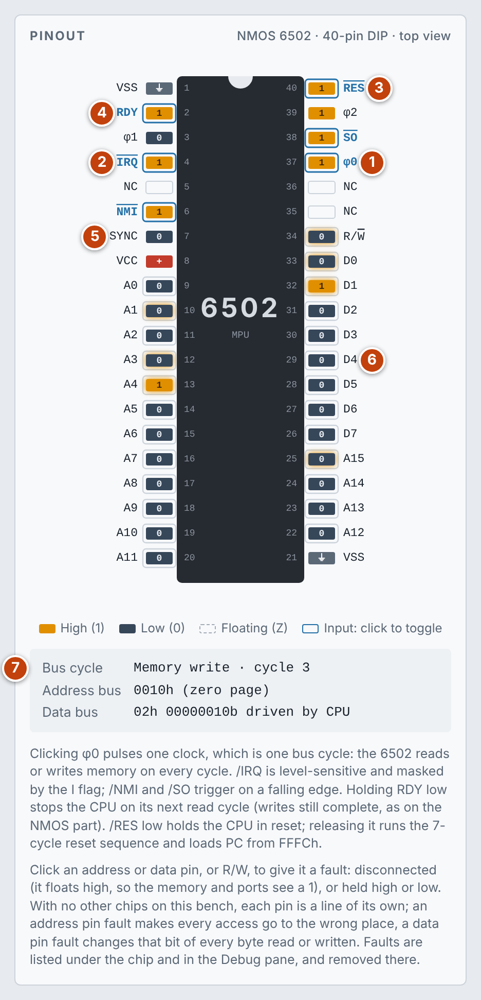
Every pin shows its level on each clock: amber for high, dark for low and a dashed outline when the pin is floating. The pins outlined in blue are inputs that you drive by clicking them.
- φ0: click to pulse one clock, the same as Clock 1 cycle.
- /IRQ and /NMI: click /IRQ to hold the interrupt request low; it is level-sensitive and masked by the I flag. Click /NMI to make a falling edge, which is what triggers it.
- /RES and /SO: /RES low holds the CPU in reset; releasing it runs the 7-cycle reset sequence and loads the program counter from
FFFCh. A falling edge on /SO sets the V flag. - RDY: held low, it stops the CPU on its next read cycle. Writes still complete, as on the NMOS part.
- SYNC: high during the cycle that fetches an opcode.
- Data bus pins: show the byte being read or written in the current cycle.
- Bus readout: the kind of bus cycle and its number within the instruction, the address on the bus with a note of what lives there, and the data bus value in hex and binary with what is driving it.
Pin faults: the address and data pins and R/W are ringed in grey. Click one to disconnect it (it floats high, so the memory and ports see a 1 there) or hold it high or low (R/W offers Disconnected and High: every cycle then looks like a read, so writes are lost). With no other chips on the bench, each pin is a line of its own. An address pin fault sends every access to the wrong place; a data pin fault changes that bit of every byte read or written. A faulty pin is drawn with a dashed red ring, and the faults are listed under the chip and in the Debug pane, where each can be removed. The emulated machines (MSX, PET, Osborne, ZX81, CPC) go further: there the processor's pins share lines with the other chips on the board.
Disassembly and breakpoints
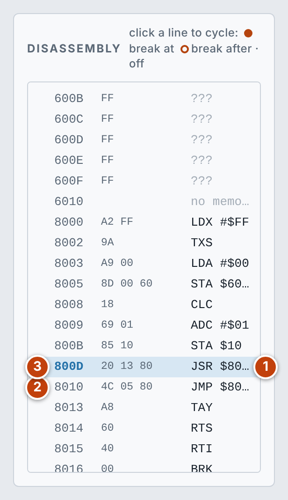
The list scrolls through all of memory and keeps the current instruction in view as you step. Click a line to cycle through its three states: break at, break after, off. Bytes that are not a documented opcode show as ???.
- Current instruction: the highlighted line is where the program counter is.
- Break at (filled dot): the run stops before this instruction executes.
- Break after (ring): the run stops when the PC leaves this address. On a branch to itself, the run continues until the branch falls through.
Memory and the memory bitmap
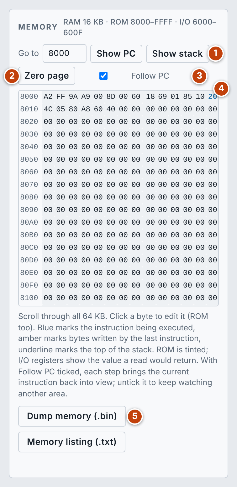
- Go to, Show PC and Show stack: type a hex address to jump there, or jump to the program counter or to the stack in page 1.
- Zero page: jumps to
0000h, where 6502 programs keep their fast variables and pointers. - Follow PC: when ticked, each step brings the current instruction back into view. Untick it to keep watching another area while the program runs.
- Hex view: click any byte to edit it, ROM included. Blue marks the instruction being executed, amber marks bytes written by the last instruction, and an underline marks the top of the stack. ROM is tinted, and I/O registers show the value a read would return.
- Dump memory (.bin) and Memory listing (.txt): save memory as a raw image or as a hex listing.
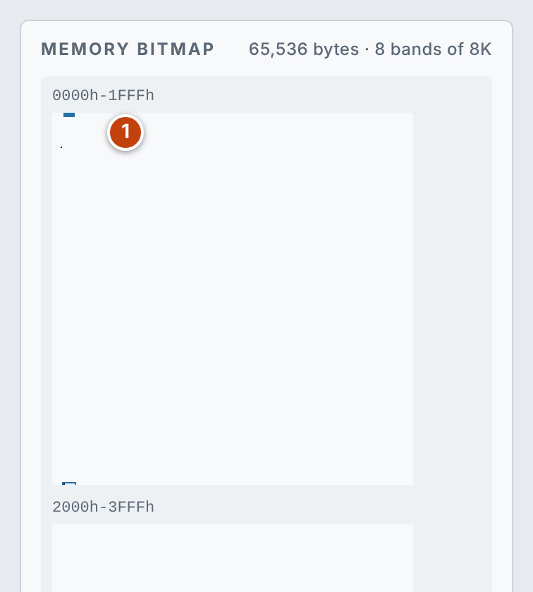
The bitmap draws every bit of memory as one pixel. Each byte is a row of 8 pixels with bit 7 on the left, each strip is one 256-byte page read top to bottom, and each band holds 8K. Empty memory is blank, machine code looks like noise, and tables and text show regular patterns, so you can see where a program and its data sit and watch memory change as it runs.
- Bands: the red mark is the program counter and the blue mark is the stack pointer.
- Readout: point at the bitmap to read the byte under the pointer; click to show that address in the Memory panel.
Registers and register stops
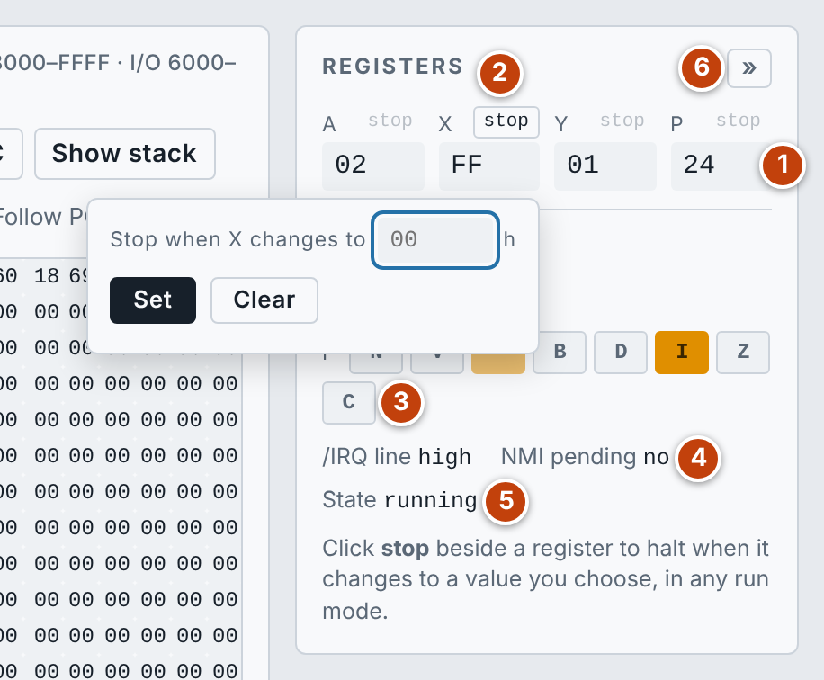
- Register values: A, X, Y, the status register P, the stack pointer S and the program counter, all in hex. Click a value to edit it. Values that changed in the last step are shown in orange.
- stop: click it beside any register and enter a hex value. The run halts at the end of the instruction that changes the register to that value, in every run mode. Clear removes the stop.
- Flags: the bits of P: N, V, B, D, I, Z and C; a lit button is a set flag. Click one to toggle it.
- /IRQ line and NMI pending: the level on the interrupt request pin, and whether an NMI edge is waiting to be taken.
- State: running, reset (while /RES is low), stopped by RDY, or jammed (after an undocumented opcode; reset to recover).
- Fold: collapses the panel.
Debug pane
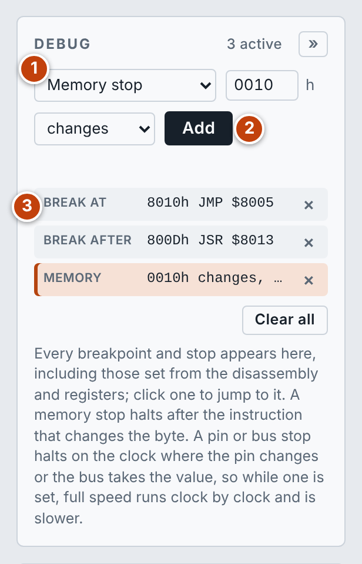
- Kind of debug point: choose what to add; the fields beside it change to suit.
- Add: adds it to the list.
- The list: every breakpoint and stop, including those set from the disassembly and the registers. Click one to jump to it, or the × to remove it. Clear all removes everything. The one that halted the run is highlighted.
| Kind | Halts |
|---|---|
| Memory stop | After the instruction that changes the byte at an address, or changes it to a given value |
| Pin stop | On the clock where a pin changes, goes high or goes low |
| Address bus value | On the clock where the address bus takes the value |
| Data bus value | On the clock where the data bus takes the value |
| Break at address | Before the instruction at the address runs |
| Break after address | When the PC leaves the address |
While a pin or bus stop is set, full speed runs clock by clock so that it can check every cycle, which makes it slower.
Bus timing
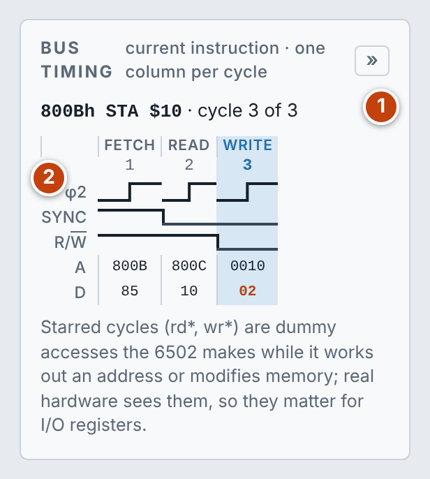
- Instruction: the address and mnemonic being drawn, and which of its cycles the CPU has reached.
- Cycles: one column per bus cycle, with φ2, SYNC and R/W drawn as waveforms and the address (A) and data (D) underneath.
Starred cycles (rd*, wr*) are dummy accesses the 6502 makes while it works out an address or modifies memory. Real hardware sees them, so they matter when the address is an I/O register.
System and I/O registers
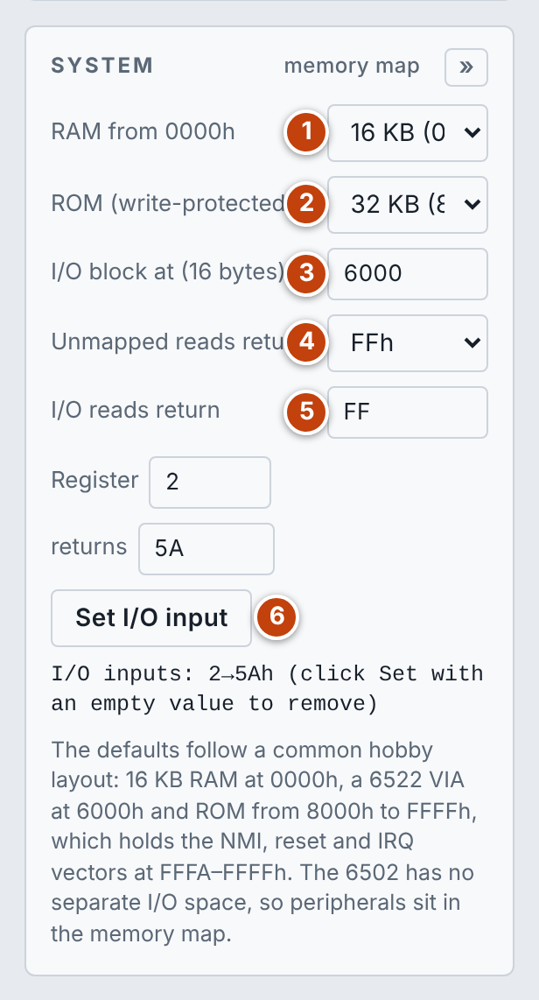
- RAM from 0000h: 1, 2, 4, 8, 16, 32, 48 or 64 KB.
- ROM (write-protected): none, or 4, 8, 16 or 32 KB ending at
FFFFh, so that it holds the vectors. - I/O block: the address of a block of 16 memory-mapped registers.
- Unmapped reads return:
FFh, or the last value on the data bus, as on a real board with nothing driving the bus. - I/O reads return: the value read from any I/O register you have not set.
- Set I/O input: enter a register number and the value it returns when read. Set it with an empty value to remove it.
The defaults follow a common hobby layout: 16 KB of RAM at 0000h, a peripheral such as a 6522 VIA at 6000h and ROM from 8000h to FFFFh.
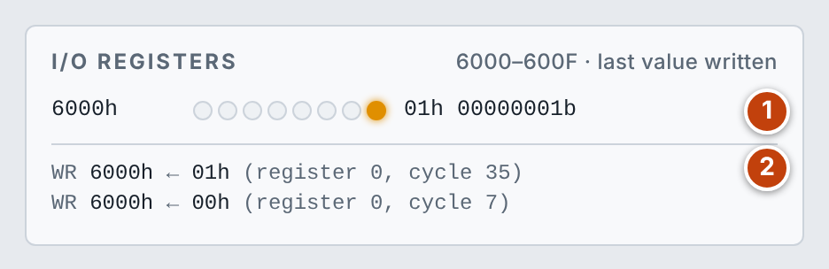
- Output latches: each I/O register the program has written appears as eight LEDs (bit 7 on the left) with the value in hex and binary.
- Log: the most recent accesses, with the register number and the cycle count when each happened.
Hardware reference
6502 Bench emulates the CPU alone: an NMOS 6502 in its 40-pin package, with RAM, ROM and a block of I/O registers attached straight to its buses. This section describes what it does at the pins.
Pins
| Pin | Signal | Direction | What it does |
|---|---|---|---|
| 9–20, 22–25 | A0–A15 | Output | Address bus, driven on every cycle |
| 33–26 | D0–D7 | Both | Data bus |
| 37 | φ0 | Input | Clock in. One pulse is one bus cycle |
| 3, 39 | φ1, φ2 | Output | The two clock phases the CPU makes from φ0. Memory is accessed while φ2 is high |
| 34 | R/W | Output | High for a read cycle, low for a write cycle |
| 7 | SYNC | Output | High during an opcode fetch |
| 2 | RDY | Input | Low stops the CPU on its next read cycle |
| 4 | /IRQ | Input | Interrupt request, level-sensitive, masked by the I flag |
| 6 | /NMI | Input | Non-maskable interrupt, triggered by a falling edge |
| 40 | /RES | Input | Low holds the CPU in reset |
| 38 | /SO | Input | A falling edge sets the overflow (V) flag |
| 8; 1, 21 | VCC; VSS | Power | |
| 5, 35, 36 | NC | Not connected |
Bus cycles
The 6502 reads or writes memory on every clock cycle, without exception. An instruction takes from 2 to 7 cycles, and when the CPU has nothing useful to fetch it still performs an access: a dummy read or write.
- Opcode fetch: the first cycle of every instruction, marked by SYNC high.
- Reads and writes: operands, data and the stack, one byte per cycle.
- Dummy accesses: made during indexed addressing, page crossings, branches and read-modify-write instructions (which write the old value back before the new one). The bench performs every one of them on the bus, as the real chip does.
Reset and interrupts
| Event | Vector | Behaviour |
|---|---|---|
| /NMI | FFFAh | A falling edge is remembered and taken at the end of the current instruction |
| Reset | FFFCh | Releasing /RES runs the 7-cycle reset sequence |
| /IRQ and BRK | FFFEh | /IRQ is taken at the end of an instruction while the pin is low and the I flag is clear |
Each vector is two bytes holding the address of its routine, low byte first. On an interrupt the CPU pushes the program counter and the status register onto the stack and sets the I flag. A change to the I flag by CLI, SEI or PLP takes effect one instruction late, as on the real chip.
Memory map
- RAM: from
0000hup to the size chosen. Page 0 is the zero page and page 1 (0100h–01FFh) is the stack. - ROM: at the top of memory, ending at
FFFFh. Programs cannot write to it; the loader and the memory editor can. - I/O block: 16 registers. The 6502 has no separate I/O space, so peripherals sit in the memory map. Each register remembers the last byte written and returns the value you set for reads.
- Everything else: unmapped. Reads return
FFhor the last value on the data bus.
The Commodore PET emulator replaces this simple model with the real memory map and peripherals of that computer.
Verification and limits
- Klaus Dormann's functional test passes, decimal mode included, in the published number of cycles.
- SingleStepTests: all 1,510,000 cases for the 151 documented opcodes match the real chip, including the address, data and read/write of every bus cycle.
- Assembler: all 151 documented opcodes assemble to the expected bytes.
Known limits:
- Undocumented opcodes are not emulated: the CPU stops, the state shows jammed and the disassembly shows
???. Reset to recover. - During clock stepping, registers and memory update together at the end of each instruction, not partway through it. Bus activity on the pins is exact for every cycle.
- RDY holds the read cycle in place, but the value read is the one present when the instruction started.
- Interrupts are taken at instruction boundaries. Rare hardware quirks, such as an NMI hijacking a BRK, are not modelled.
- The CMOS 65C02 is not modelled.